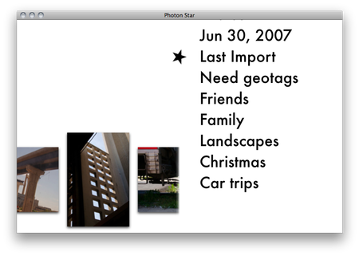

The purpose of Photon Star is to help you rate your entire iPhoto library so that you can enjoy your best photos more.
When you launch Photon Star, it will search through all the albums in your default library and present a list of those
albums which contain unrated photos:

Use the remote or keyboard (as described in Navigating Photon Star) to select an album. As you move within the album menu, it will display a preview of all the photos in the selected album.
Once you have selected an album, the rating process begins. Don't worry if an album contains too many photos, you can exit the first stage of rating early if necessary. Give photos an up or down rating in each stage as described in Stage-based rating.